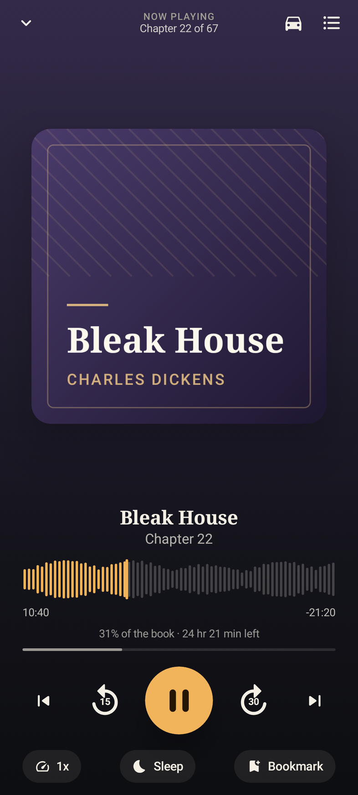
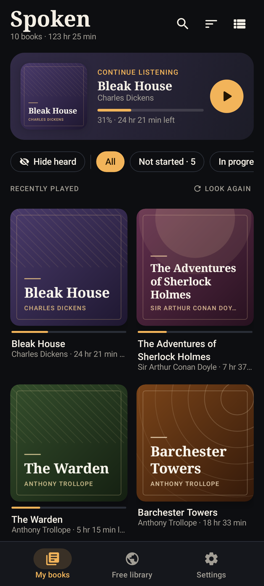
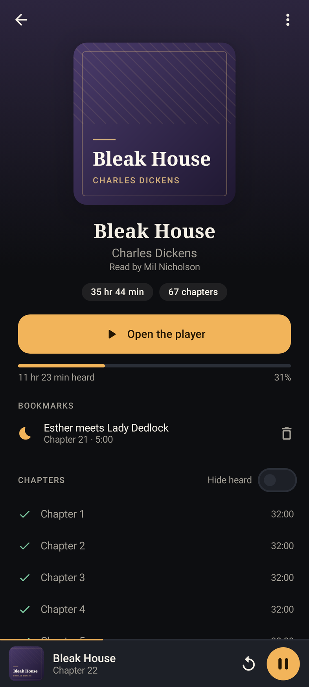
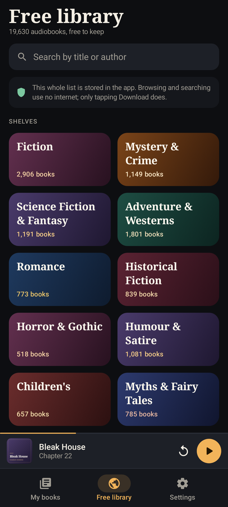
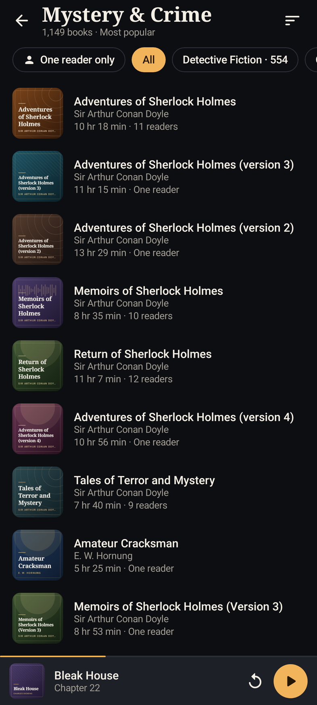
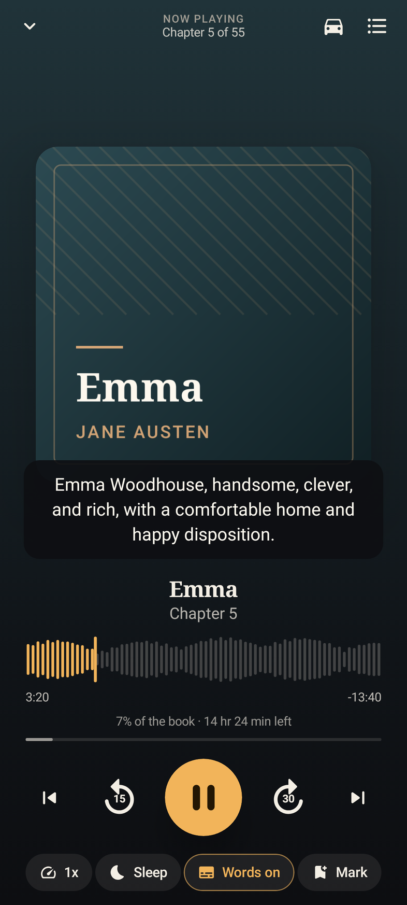
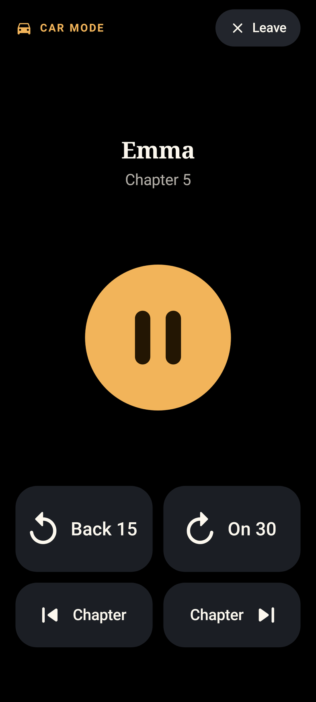
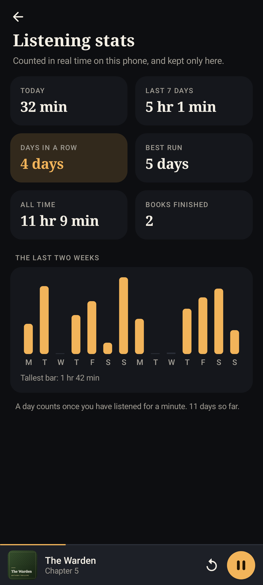

An audiobook player that keeps to itself.
Spoken is an Android app for audiobooks. Point it at the folder your books are in and it finds them, shows their covers and remembers your place in every one. It plays with the screen off, from the lock screen, from a widget and in the car.
It also lists 19,630 free audiobooks, recorded by LibriVox volunteers, on 25 shelves. The whole list is inside the app, so you can browse and search it with no internet. Spoken only goes online when you tap Download.
Download for AndroidHow to install
- Version 1.0
- Android 8 or later
- 7 MB
Free, with nothing to unlock. No adverts, no account with the developer, no tracking. Compare or read the release notes.
Chrome may say the file might be harmful. It shows this for app files that do not come from Google Play. Choose Download anyway.

- No subscriptionEvery feature is in the free app.
- No advertsNone in the app and none on this site.
- No accountYour books and your place in them stay on your phone.
- 19,630 free booksListed in the app, to keep for good.
A look inside
These are the real screens, drawn from the app's own code with a made-up set of books. The free library is the list built into the app. Swipe or scroll sideways to see them all.







How it works
An audiobook app should find your books, remember your place and then stay out of the way.
Choose your audiobook folder
Pick the one folder your books are in. Each sub-folder becomes a book. Spoken explains why one folder is better than searching the whole phone, and you can switch on a whole-phone scan as well, or instead.
Or pick a free one
Open the Free library, choose a shelf and tap Download. The first chapter can play while the rest arrive.
Listen anywhere
Press play. Spoken keeps going with the screen off, and saves your place in every book as it goes.
Everything is in, and all of it is free
Nothing below is held back for a paid tier, because there is no paid tier.
Your books
- Covers and progress
- A grid or a list, with the cover from the file or folder, one you choose from your gallery, or one Spoken draws.
- Seven ways to sort
- Recently played, title, author, newest added, nearest to finished, longest or shortest. Group by author, narrator or series.
- Hide what you have heard
- Hide finished books, and hide heard chapters. Both are off until you switch them on.
- Chapters inside one file
- Spoken reads the chapter list inside M4B and M4A files, and treats separate MP3 files as chapters.
Listening
- Speed, skip and step back
- A speed for each book, skip buttons you set from 5 to 90 seconds, and a few seconds stepped back after a pause so you keep the thread.
- Sleep timer
- A set time or the end of the chapter, with a fade. Shake the phone to add time. If you drop off, Spoken marks where the timer stopped.
- Bookmarks with notes
- Mark a moment, add a note, and jump back to it from the book's page.
- Skip silences and voice boost
- Close up long pauses, and lift quiet readers.
- Subtitles
- Off by default. When a subtitle file sits beside the audio, Spoken can show the words as they are read.
Everywhere
- Screen off and lock screen
- Playback carries on with the screen off, with controls on the lock screen and in the notification.
- Three home-screen widgets
- Small, medium and large, with the cover, your place and the buttons.
- Android Auto and car mode
- Your shelves in the car, and a car mode on the phone with very large buttons.
- Headphone buttons
- Choose what a double and a triple press do: skip, or go to the next or previous chapter.
The free library
- 19,630 audiobooks
- Every finished English recording from LibriVox, on 25 shelves and in 135 categories, with the reader, length and a description.
- Browse with no internet
- The list is inside the app. Searching and browsing never go online.
- Yours to keep
- Downloads are saved on your phone, on Wi-Fi only if you like, and play like any other book.
- A longer list each month
- Once a month Spoken reads this website to see whether books have been added. You can switch that off.
Looking after it
- Backup file
- Your places, bookmarks, speeds, settings and listening stats in one small file, saved to a folder you choose, by hand or once a week.
- Listening stats
- Time listened, your run of days and books finished, counted on the phone and kept there.
- Offline lock
- One switch stops Spoken going online at all.
- Dark and light
- Dark first, with a light theme, colours taken from the cover and less movement if your phone asks for it.
Your listening is your business
No servers
Spoken has no accounts and no servers. The developer receives nothing from the app.
Works with no internet
Playing, browsing and searching need no connection, and that includes the whole free library list.
Online only when it must be
It goes online to download a free book you asked for, and once a month to see whether the free list has grown. Offline lock stops both.
No ads, no tracking
There is no advertising, analytics or tracking in the app or on this site.
Installing and updating
Spoken is not on Google Play, so your phone asks a couple of extra questions the first time.
Download the app file
Tap Download on your phone. The file is called Spoken.apk and is about 7 MB. If Chrome says the file might be harmful, choose Download anyway.
Allow the install
Open the file. The first time, Android asks you to allow your browser to install apps. Allow it, go back and tap Install. If Google Play Protect steps in, choose More details, then Install anyway.
Updating later
Spoken does not check for new versions in the background. In Settings, Check for updates opens the release notes page in your browser. Install the new file over the old one and your books, places and bookmarks are kept.
Version 1.0, released 22 November 2026. See the release notes, or check your download.
Questions
Is Spoken really free?
Yes. There is no paid version, no subscription, nothing to unlock and no adverts.
Why choose one folder instead of scanning the whole phone?
A folder tells Spoken exactly which files are audiobooks. Each sub-folder becomes one book, in the right order, with its cover. A whole-phone scan also finds music, voice notes and ringtones, and has to guess which files belong together. You can switch on either, or both, in Settings under Finding your books.
Which files does it play?
MP3, M4B, M4A, AAC, OGG, Opus, FLAC and WAV. Chapter lists inside M4B and M4A files are read. Books bought from stores that lock their files, such as Audible, cannot be played.
Where do the free audiobooks come from?
They are recordings made by LibriVox volunteers and given to the public domain. The files are hosted by the Internet Archive. Spoken is not connected with either. If you enjoy the books, both welcome donations.
Does it need the internet?
No. Playing your books, browsing the free library and searching it all work with no connection. Spoken goes online only to download a free book you asked for, and once a month to see whether the free list has grown. Offline lock in Settings stops both.
Does it work in the car?
Yes. Spoken appears in Android Auto with your shelves, and car mode on the phone shows very large buttons and nothing else. Set it going before you drive.
How do subtitles work?
Subtitles are off by default. If a subtitle file with the same name sits beside the audio file (SRT, VTT or LRC), switch Subtitles on and the words appear on the player as they are read. Spoken does not write subtitles itself.
How do I move to a new phone?
Copy your audiobook folder and the backup file to the new phone. Install Spoken, choose the folder, then tap Restore in Settings under Backup. Every book picks up where you left it.
What does the pattern of bars on the player show?
Your place in the chapter. The bars are a pattern drawn for each chapter, not a picture of the sound. Settings has a switch for a plain line instead.
Every book, right where you left it
Free, with no adverts and nothing to unlock. Made by the developer of several other free Android apps: see them all.